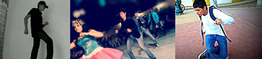

Música
Esta banda me la recomendó un amigo yo no era de muchos gustos musicales pero me animé a escucharla y me gustó mucho, hasta la fecha la sigo escuchando, nunca he podido ir a un concierto de ellos , me gusta la letras de sus canciones el ritmo de sus guitarras.
Mangas
Los empecé a leer por que las serias no las animaban por completo o por recomendaciones de amigos, sin darme cuenta me leía hasta 50 capítulos de cada manga , me gustan las historias de detectives o todo lo que tenga que ser policial , misterio , sobrenatural etc. Hoy lo hago como pasa tiempo en mis ratos libres.
Deportes
Los deportes me gusta observarlos, practicaba baseball de niño pero poco, me gusta del futbol las técnicas individuales de cada jugador y como hacen que se unan las jugadas con su compañeros, del baseball el trabajo entre el pitcher y el cátcher saber que bola pedir para cada bateador y tener el control de la pelota el pitcher, del volibol los remates de los spiker o los ataques sincronizados.
El Baile
Bailar o hacerle el intento jajá en todos los bailables del kínder hasta prepa he participado me gusta me entretiene y conozco más gente practicamos nos divertimos de todo es uno de mis gustos